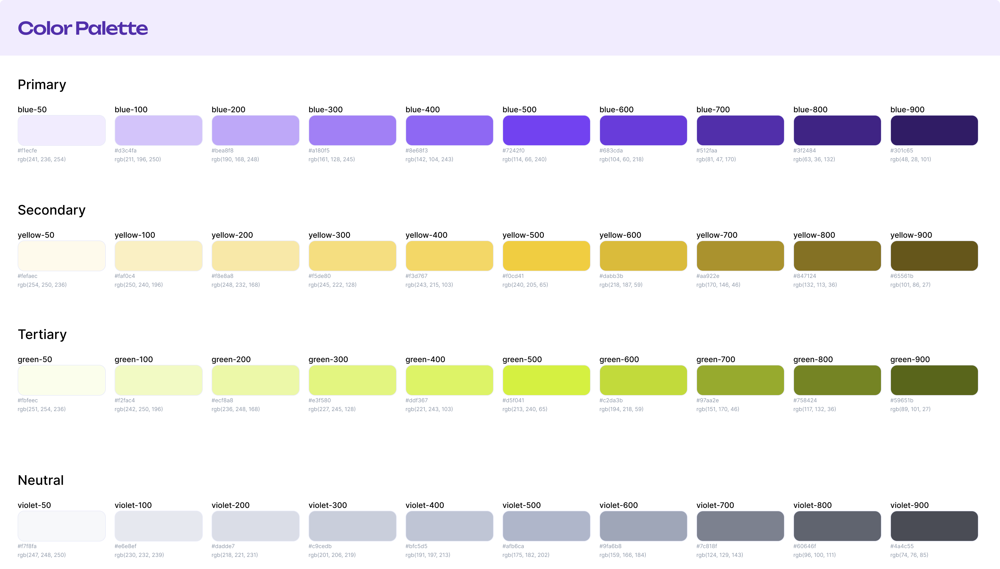
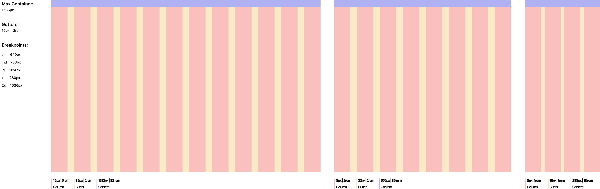

Design System Foundations
Before building any components, I focused on establishing the foundations of the Design System. This involved defining core rules, structure, naming conventions, tokens, and controls. At the core of this foundation were design tokens, which act as the single source of truth for all design decisions.
Color Palette
A carefully curated selection of colors that align with the brand identity and ensure accessibility.

Typography
Hierarchy is expressed through weight, size, line height, and letter spacing, organized into five device-agnostic type roles:
A typographic scale is essentially a set of text sizes that follow a consistent mathematical proportion, creating harmonious relationships between each level. In practice, when you define a typographic scale for your project, you establish a series of predetermined sizes that will be used consistently across the interface. Benefits include:
- Visual consistency
- Clear hierarchy
- Efficiency in the design process

Spacing Tokens
The 4px base unit forms the foundation of our spacing token system, defined as spacing-xs. So everything becomes a multiple of 4. Every spacing token is derived as a multiple of this base unit, where the numeric suffix represents a percentage of the base value. it matches Tailwind, Chakra, Material systems. 4px is better than 8px.
Why? A 4px spacing system offers significantly more flexibility compared to an 8px system, which can often feel too rigid. With a 4px base, designers can easily use values like 12px, 20px, and 28px—sizes that are very common in real UI design but harder to achieve cleanly with an 8px-only scale. It also improves micro-spacing, allowing more precise control over elements like button padding, icon gaps, and input field spacing, where 8px increments can feel too large or visually heavy. At the same time, it remains scalable because you can still think in terms of 8px multiples when needed, for example, 8px becomes 2 units and 16px becomes 4 units—giving you the best of both precision and consistency.
- Micro spacing: Micro white space refers to the small spaces between individual elements, such as text and images.
- Macro spcaing: Macro white space refers to the larger spaces between sections or groups of elements, such as between paragraphs or sections.

Layout Grid
A grid is used to structure and position content in a way that creates consistent and balanced page layouts. It helps designers organize information clearly and maintain visual harmony across screens. A layout grid is made up of three key elements: columns, gutters, and margins. Columns divide the page into equal vertical sections and act as the primary structure for placing content. Gutters are the spaces between these columns, ensuring that content is separated in a clean and consistent manner. Margins define the outer boundaries of the layout, preventing content from touching the edges of the screen and maintaining proper breathing space.
A fixed-width grid is a type of grid where the overall layout width remains constant regardless of screen size. Instead of stretching fluidly, the content stays within a defined width, making it easier to maintain precise alignment and control over design elements. This approach is commonly used in desktop-focused designs where consistency and predictability are more important than responsiveness.

Component Guidelines
Clear guidelines for component usage, including best practices for accessibility and responsive design.
Accessibility Guidelines
Clear guidelines for ensuring all components are accessible to users with disabilities.
Components and Tech Implementation
For the portfolio's project gallery, I utilized the Shadcn Card component as the structural foundation. Following the Atomic Design methodology, I treated the individual Shadcn elements, such as CardHeader, CardTitle, and CardContent as atoms that were composed into a functional molecule (the Project Card).
Key Technical Decisions
- Composition: I nested atoms like Badge (for tech stacks) and Button (for links) within the Shadcn card structure to create a rich, informative organism.
- Customization: Using Tailwind CSS, I extended the base Shadcn styles to include custom hover effects and typography scales (using Playfair Display for titles), ensuring the component matched my unique brand identity.
- Reusability: By defining a clear props structure for the image, title, and description, I transformed the static Shadcn template into a dynamic, reusable component that handles all project entries consistently.